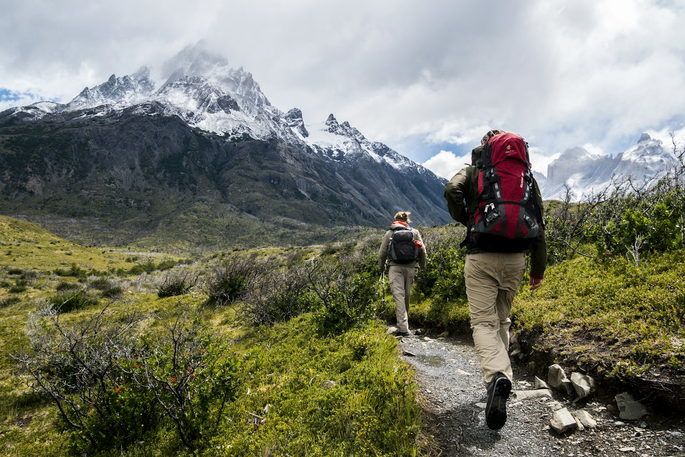

Depuis 2019, Léonie et Hugo racontent leurs marches, leurs routes et leurs détours. Pas de classement, pas de « top 10 » : des récits honnêtes.

Un récit, une carte, une liste de matériel. Jamais de publicité.